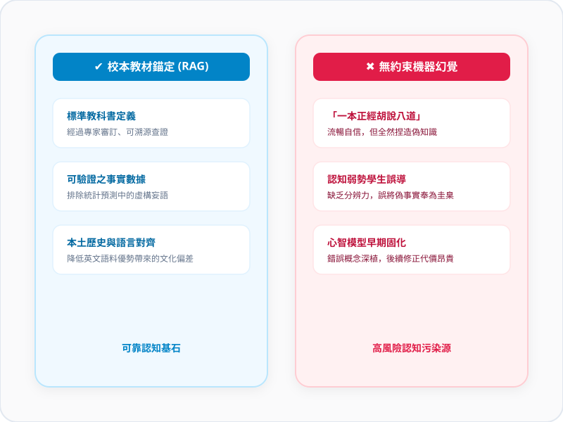
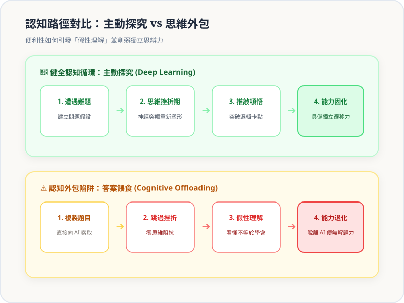
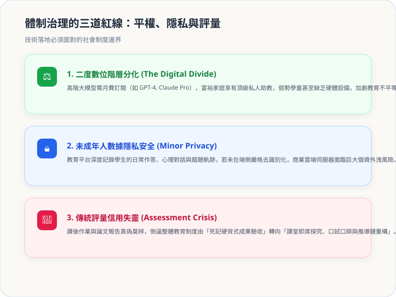

大語言模型在教育中的
運用問題與突破路徑
從認知科學、神經網絡自回歸限制到教育哲學，全面剖析生成式 AI 走入現代教學現場時的深層矛盾，並梳理未來「可靠人本導師系統」之構建框架。

前言：教育典範的生成轉向與隱憂
傳統教育體系受制於師資與時空成本，長年面臨「一體適用（One-size-fits-all）」的規格化限制。隨以 Transformer 為核心的大語言模型（LLMs）崛起，教育正迎來從「檢索模式（Search Mode）」邁向「生成模式（Generation Mode）」的根本典範轉移。
依據文獻 Xu et al. (2024) 的全景綜述，LLM 展現了跨學科知識整併與極致高頻的即時回饋（Immediate Feedback）潛力。然而，教育並非一般的資訊問答，其容錯率極低且直接關乎受教者的認知發展。當前大模型在實際課堂應用中，正面臨四個層次的嚴峻挑戰。

技術性能與邏輯極限
1.1 機器幻覺（Hallucination）在教育中的致命性
大語言模型本質上是基於統計關聯與注意力權重的條件機率預測器，它並不「理解」真實物理世界或形式邏輯定理。這導致模型時常出現「極其權威、語法毫無破綻，但核心內容純屬虛構」的現象。
處於認知奠基期的中小學生，通常缺乏足夠的領域背景知識來進行交叉查證。一旦學生在早期概念建構時吸納了由 AI 製造的偽事實（如捏造的歷史因果、錯誤的生化反應機制），該錯誤將固化於心智模型中，後續修正需付出倍數的教學成本。

1.2 多步嚴密推理的「二十步斷崖 (The 20-Step Cliff)」
在數理、幾何與邏輯證明等高度序列化的學科中，推導往往具備「一步錯、全盤皆輸」的脆弱性。Xu et al. (2024) 引用實證數據揭示了一個令人震驚的現象：

如圖 4 所示，LLM 在 5 步以內的短程推導中能維持高達 95% 的優秀命中率；然而當證明題步數延伸至 20 步以上時，正確率呈斷崖式跌落至僅剩 36%。其根源在於：自回歸生成的單向性使得初期產生的微小數值或運算子誤差形成骨牌式連鎖反應（Cascading Failures），徹底瓦解終端證明的可信度。
學習者認知衝擊與心理惰性
調研指出，全球有高達 89% 的學生在撰寫作業或論文時曾使用 ChatGPT 等生成式工具。然而，這種極致的便利性同時也是一把雙面刃，極易誘發嚴重的「認知外包（Cognitive Offloading）」。

● 思考挫折期的消失
心理學研究表明，人類深度學習（Deep Learning）正是發生在「嘗試、卡住、思索、顿悟」的挫折調試期。AI 若直接給出答案，學生便跳過了突觸重塑的核心過程。
● 假性理解的幻覺
學生在閱讀 AI 詳盡解題步驟時會產生「自己已經完全學會」的認知錯覺（Illusion of Competence），一旦脫離輔助工具便無法獨立解構問題。
教育本質的不可符號化
教育的深層真諦在於「以靈魂喚醒靈魂」。然而，人類養育與機器學習的底層機制存在不可通約的根本差異：

| 比較向度 | 人類教育歷程 | 機器教育 / LLM 學習機制 |
|---|---|---|
| 演進順序 | 價值觀塑造 $\to$ 系統知識獲取 $\to$ 生活實踐體悟 | 吞吐海量語料 $\to$ 統計規律關聯 $\to$ 人類回饋對齊 (RLHF) |
| 知識屬性 | 高度依賴身教、眼神、挫敗共情等「隱性知識 (Tacit Knowledge)」 | 純粹符號化文字矩陣運算，無真實痛感與情感意識 |
| 教師角色定位 | 不可替代的啟蒙者、人生導師（Mentor） | 超高吞吐量的資訊重組輔助工具、24/7 虛擬助理 |
數位鴻溝、資安隱私與誠信危機
技術發展並非自動帶來社會正義。隨著高階大模型日益朝向商業化訂閱發展，教育現場面臨著制度層面的新衝突：

- AI 輔導的階級分化：優渥家庭能負擔頂規的模型 API 與硬體算力，弱勢偏鄉學子甚至缺乏穩定頻寬，加劇「二次數位鴻溝」。
- 未成年人畫像隱私安全：自適應學習平台在長期記錄學生錯題、語音提問與心理傾訴時，若資料未經本地去識別化，極易引發個資外洩風險。
- 評量制度的迫切重構：傳統「紙筆作業」與「課後報告」在 AI 代寫面前幾乎喪失信度，學校必須轉向「課堂即時探究、口試口辯、推導鏈即席重構」的新評量典範。
終極破局：可靠智慧導師的技術三角
綜合文獻 Wei (2022)、Lightman (2023) 與 Schick (2023) 的理論演進，未來可靠教育大模型（Reliable ITS）的標準實踐必須是「思維鏈 (CoT) + 過程監督 (PRM) + 工具自主調用 (Toolformer)」的三角閉環：

Chain-of-Thought (CoT)
顯式展示 Intermediate Steps，讓學生觀摩解題思考路徑，而非只看最終數字。
Process Supervision (PRM)
以 PRM800K 架構即時核驗每一步驟，精確定位學生「第幾步公式用錯」，根除歪打正著。
Toolformer (Tool-Use)
將大數加減乘除與定理驗證交由外部計算器（Calculator / Lean 4），杜絕純神經網絡計算幻覺。
附錄：核心引用學術文獻
- Xu, H., Gan, W., Qi, Z., Wu, J., & Yu, P. S. (2024). Large Language Models for Education: A Survey. arXiv preprint arXiv:2405.13001.
- Wei, J., Wang, X., Schuurmans, D., et al. (2022). Chain-of-Thought Prompting Elicits Reasoning in Large Language Models. NeurIPS 2022 (arXiv:2201.11903).
- Lightman, H., Kosaraju, V., Burda, Y., et al. (2023). Let's Verify Step by Step. OpenAI Research (arXiv:2305.20050).
- Schick, T., Dwivedi-Yu, J., Dessì, R., et al. (2023). Toolformer: Language Models Can Teach Themselves to Use Tools. NeurIPS 2023 (arXiv:2302.04761).
- Paranjape, B., Lundberg, S., Singh, S., et al. (2023). ART: Automatic Multi-step Reasoning and Tool-use for Large Language Models. arXiv preprint arXiv:2303.09014.